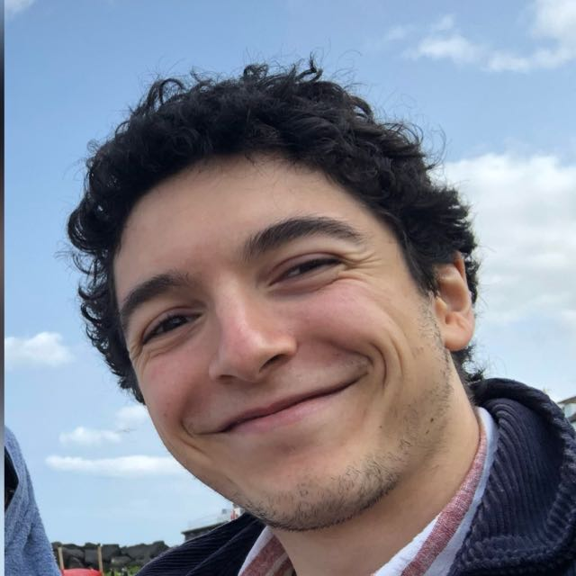

IDAN MALKA
Embedded Software Engineer · Robotics & Control
Norwich, UK · UK / EU / IL work permits
Timeline
-
— 2019Brussels, BelgiumGrew up here. Diploma in advanced maths & science.
-
2019 – 2023University of ManchesterMEng Mechatronic Engineering, First Class.
-
2022Tel Aviv, IsraelR&D internship: hardware test automation for a social robot.
-
2023 – nowNorwich, UKEmbedded software across automotive, aerospace & energy.
Skills
// programming
CC++Python
MATLAB / SimulinkFreeRTOS
// chips
STM32 (Cortex-M)ESP32
Raspberry PiArduino
// spoken
EnglishFrenchHebrew
Projects
AerospaceC · FreeRTOS
Satellite payload firmware
Embedded software for experimental payloads on a UK satellite mission.
AutomotiveISO 26262
EV traction control
Safety-critical anti-slip control for a heavy electric vehicle.
RoboticsUniversity
Lab automation robot
Modular control system for a chemical-synthesis cabinet. Best group project of the year.
SimulationGitHub →
2-DOF robotic arm
Inverse kinematics and PID tuning visualiser.